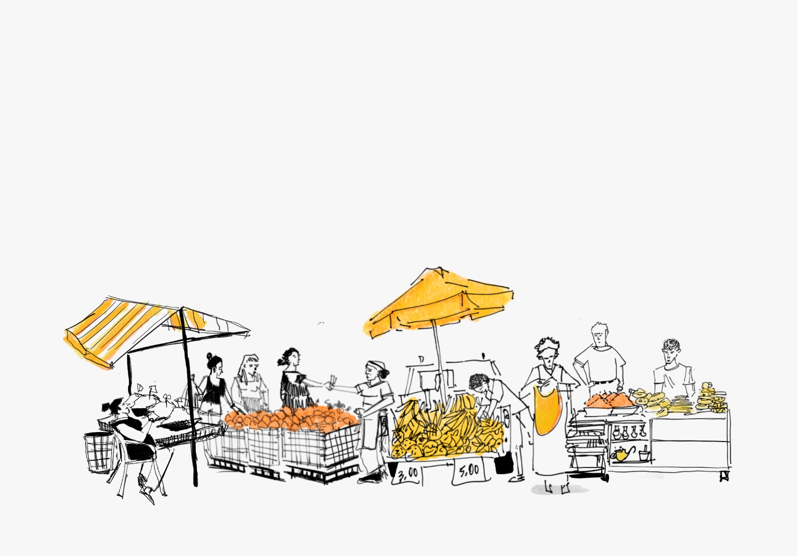
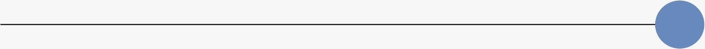
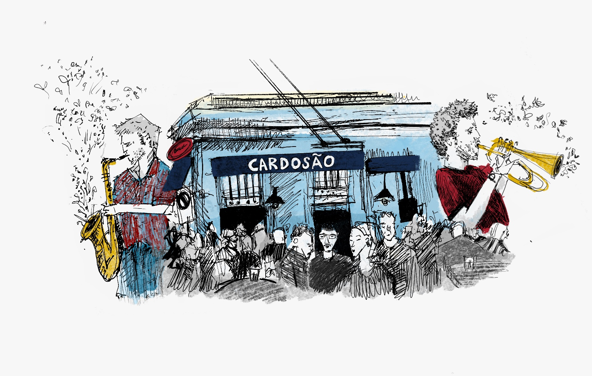
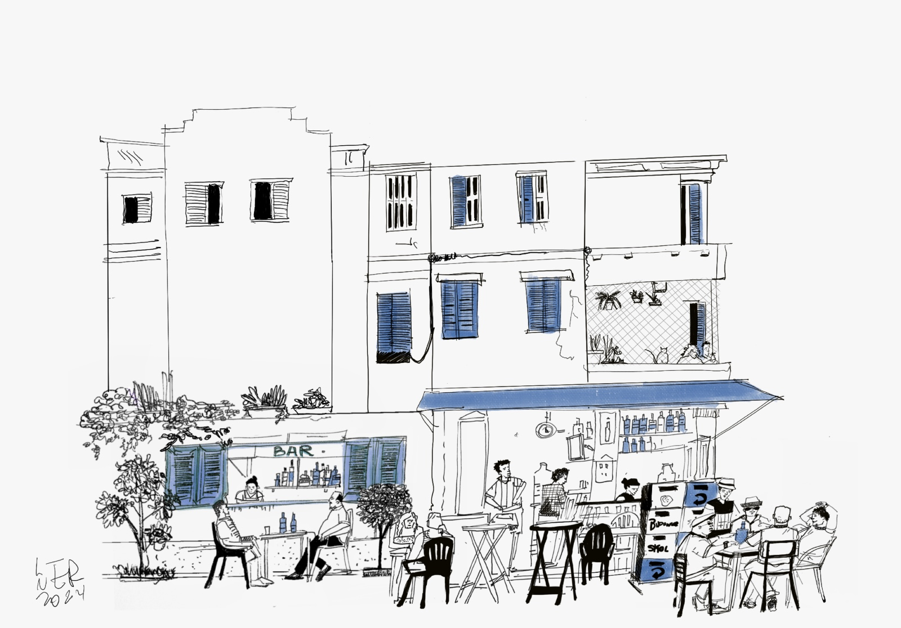
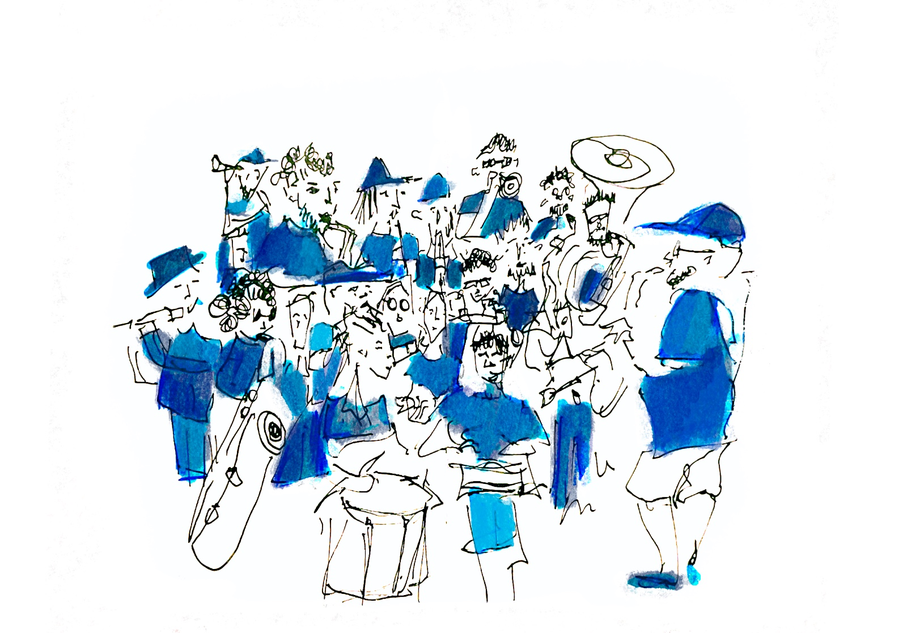
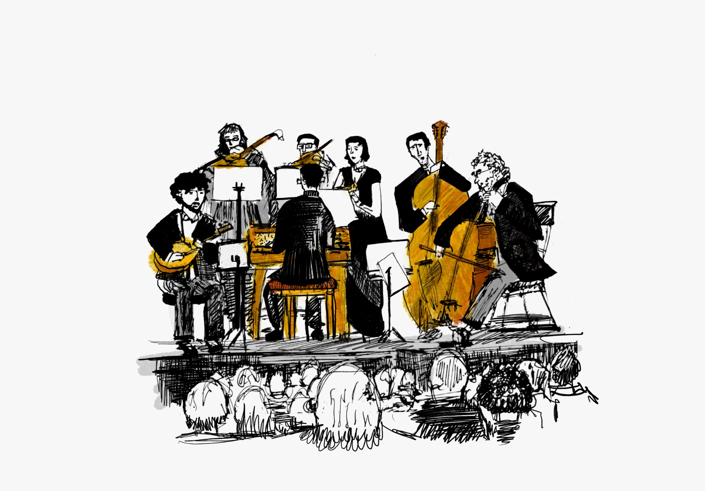
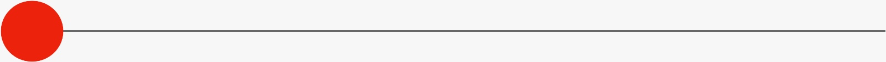
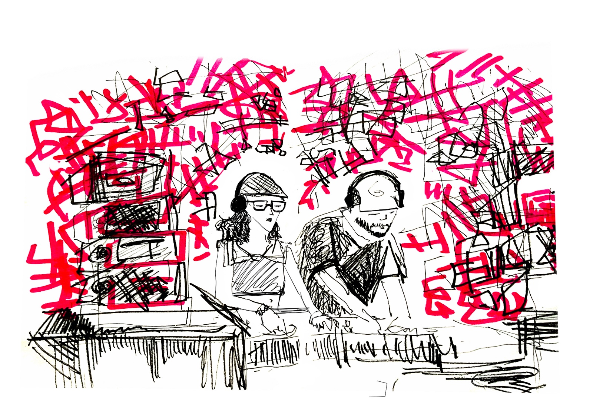
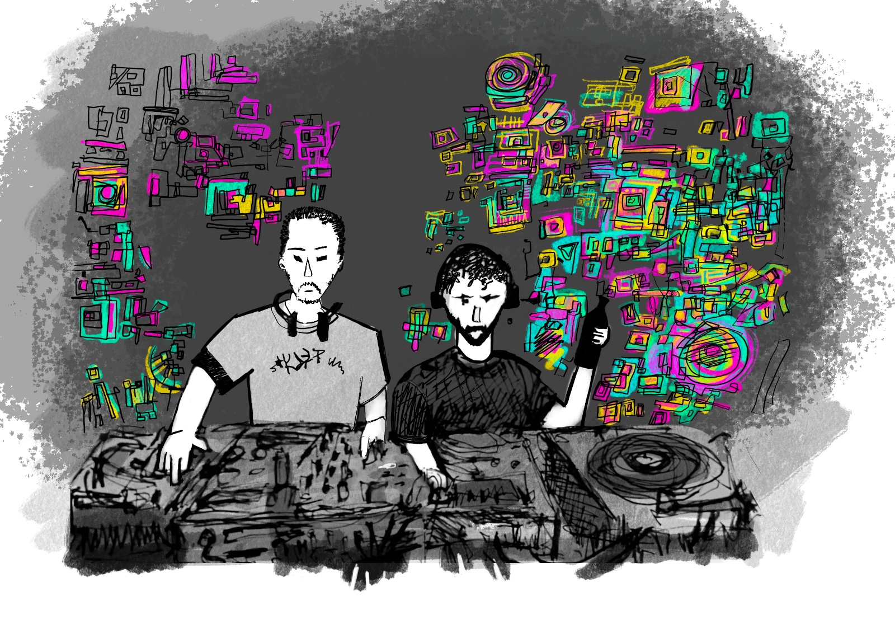
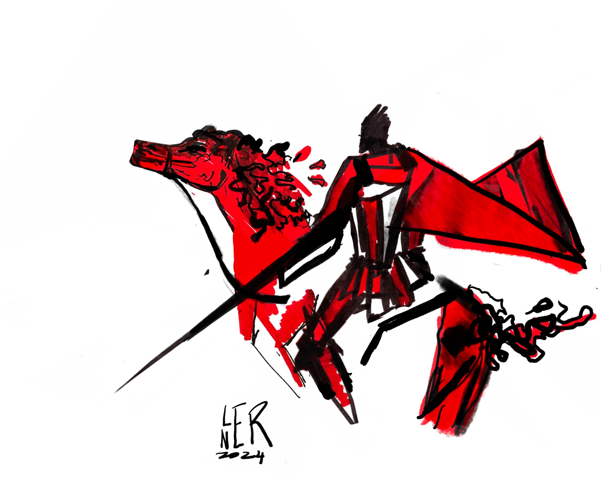

←
ANDANDO POR AÍ

Poucos lugares são os que as frutas colorem a paisagem urbana.


O Rio, que nunca sai de mim e eu nunca saio dele.

A paz reina em poucos lugares, e um deles é o bar.

Oxalá que o Carnaval aconteça.

Sinfonias da Sala São Paulo


Central 1926

Acho que é o pista quente, não faço IDEIA! Muitas festas

Dia de São Jorge